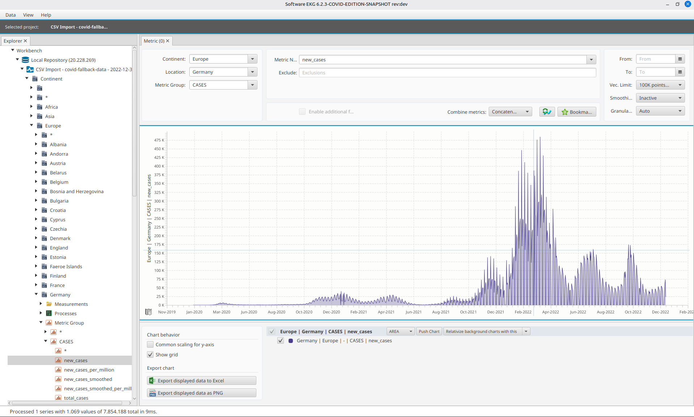
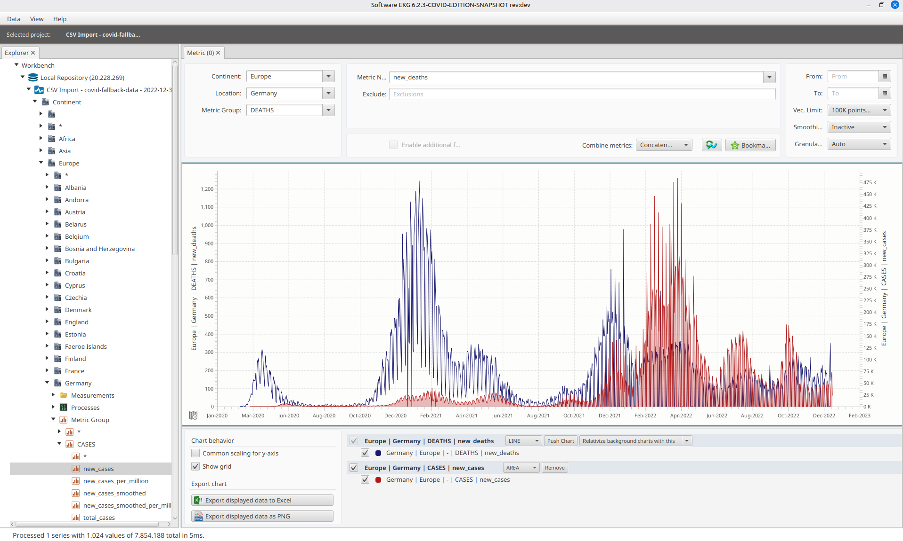

See It In Action
Explore some examples of what you can do with Software ECG



A powerful time series analysis tool for visualizing and exploring COVID-19 pandemic data
Software ECG (EKG in German) is a powerful time series analysis tool developed by Johannes Weigend and the team at QAware GmbH. The name stands for "Elektrokardiogramm" – just like a medical ECG shows the heartbeat of a patient, Software ECG shows the "heartbeat" of your data.
This COVID-19 Edition is specifically designed to visualize and analyze pandemic data, helping researchers, data scientists, and curious minds explore the global impact of COVID-19 through interactive visualizations.
Explore COVID-19 data like never before with powerful visualization tools
Display COVID-19 data over time with interactive, high-performance charts that handle massive datasets.
Compare pandemic trends across different countries and regions to understand global patterns.
Focus on specific time periods for detailed analysis of waves, peaks, and outbreak patterns.
Combine different metrics like cases, deaths, and positive rates in a single comprehensive view.
Analyze data at continental or regional levels to understand geographic spread patterns.
Available for Windows, macOS, and Linux. Built with Java 17 for maximum compatibility.
Explore some examples of what you can do with Software ECG
Download Software ECG COVID-19 Edition and start analyzing pandemic data today.
Get Started on GitHub